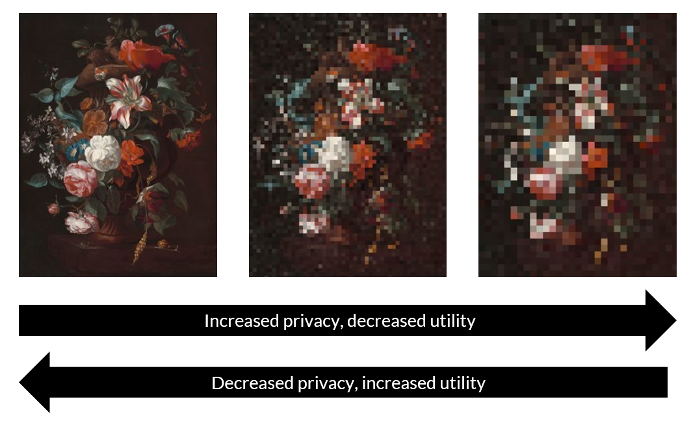
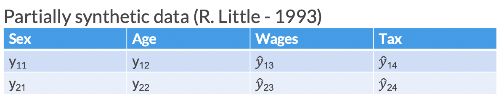
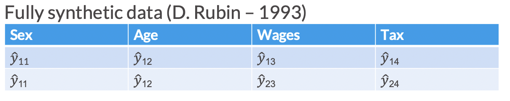
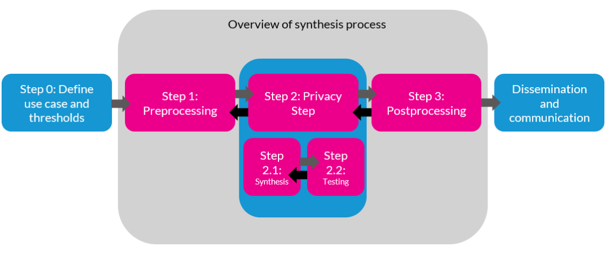
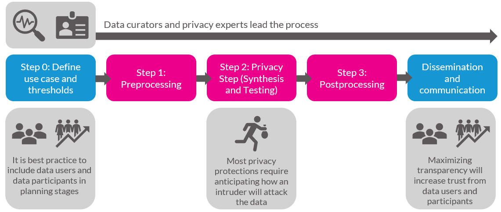
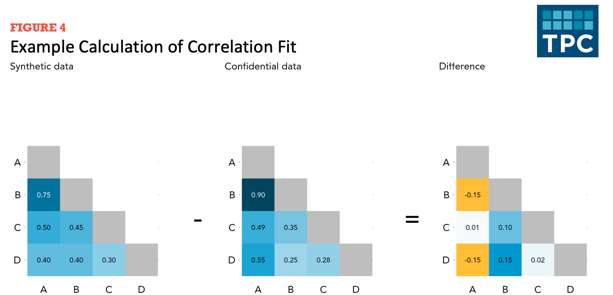
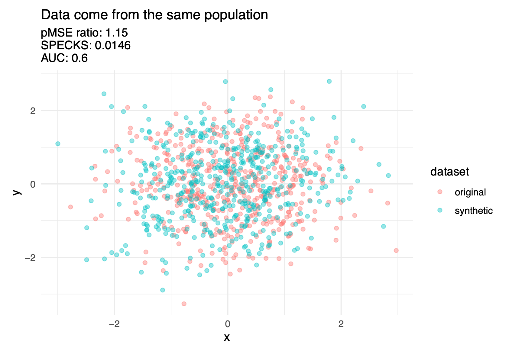
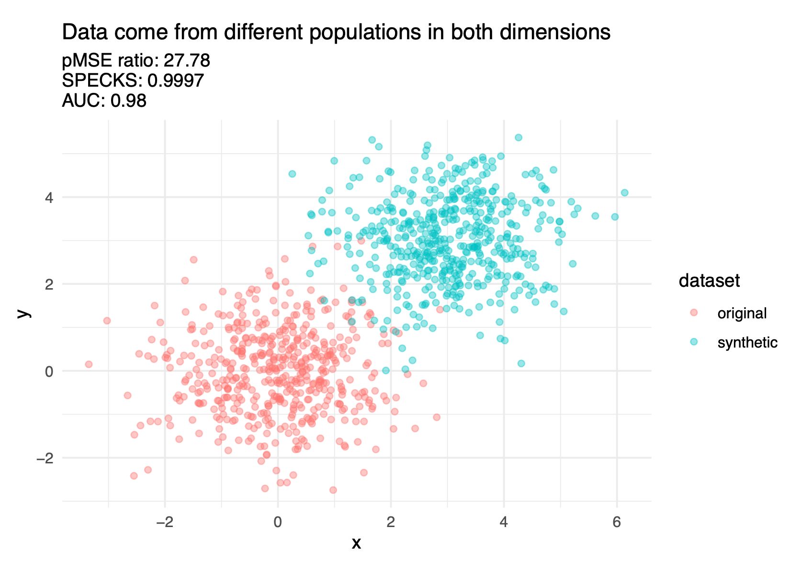
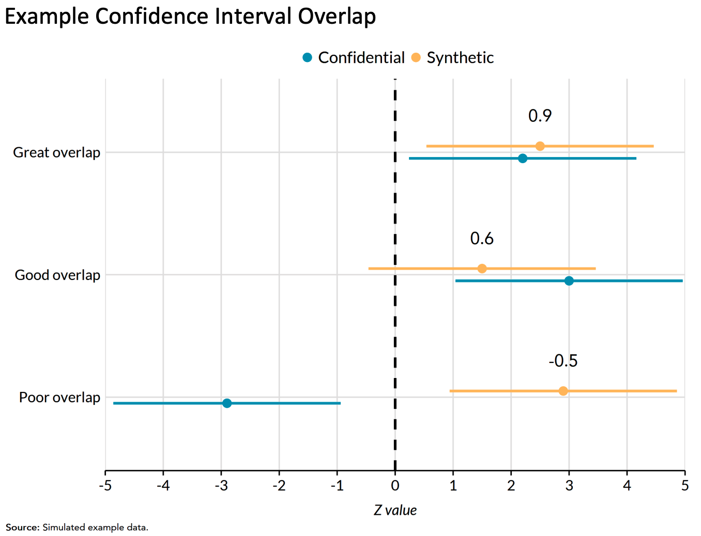

| species | bill_length_mm | sex |
|---|---|---|
| Chinstrap | 51.3 | male |
| Gentoo | 44.0 | female |
| Chinstrap | 51.4 | male |
| Chinstrap | 45.4 | female |
| Adelie | 36.2 | female |
8 Data Analysis: Part 1
For this week, we will learn about how to evaluate and analyze data while considering security, privacy, ethics, and equity.
8.1 Quick recap on week 3 (with some week 2)
We’ve discussed several challenges surrounding security, privacy, ethics, and equity in data collection, storage, and sharing.
8.1.1 Data collection
For data collection, we learned the importance of:
- Deciding whether to collect the data or not.
- Defining groups and other variables that impacts our communities.
- Recognizing that a lack of data results in a lack of action.
8.1.2 Data storage
We covered the following topics:
- The overall process and considerations for cleaning data, especially how to handle missing data.
- Best practices for virtual and physical storage of data, including the FAIR principles for creating proper metadata.
Even more definitions…
Original dataset:
Original dataset is the uncleaned, unprotected version of the data.
For example, raw 2020 Decennial Census microdata, which are never publicly released.
Confidential or gold standard dataset
Confidential or gold standard dataset is the cleaned version (meaning edited for inaccuracies or inconsistencies) of the data; often referred to as the gold standard or actual data for analysis.
For example, the Census Edited File that is the final confidential data for the 2020 Census. This dataset is never publicly released but may be made available to others who are sworn to protect confidentiality (i.e., Special Sworn Status) and who are provided access in a secure environment, such as a Federal Statistical Research Data Center.
Public dataset or statistics
Public dataset is the publicly released version of the confidential data.
For example, the US Census Bureau’s public tables and datasets or the Bureau of Labor Statistics reporting the unemployment rate statistics.
8.1.3 Data sharing and transfer
We also learned about the two general ways people access data:
- Secure Data Access
- Pros: Very secure, provides access to confidential data.
- Cons: Inaccessible to most people.
- Public Data Files and Statistics
- Pros: Accessible to anyone.
- Cons: Altered for privacy, which may reduce accuracy for specific applications and may not always be properly protected.
8.2 What is the privacy-utility tradeoff?
Data Utility
Data utility, quality, accuracy, or usefulness is how practically useful or accurate to the data are for research and analysis purposes.
There is often a tension between privacy and data utility. This tension is referred to in the privacy literature as the privacy-utility tradeoff.

8.3 What is synthetic data? Why use it?
Synthetic Data
Synthetic data consist of pseudo or “fake” records that are statistically representative of the confidential data.
- The goal of most syntheses is to closely mimic the underlying distribution and statistical properties of the real data to preserve data utility while minimizing disclosure risks.
- Synthesized values also limit an intruder’s confidence, because they cannot confirm a synthetic value exists in the confidential dataset.
- Synthetic data may be used as a “training dataset” to develop programs to run on confidential data.
Partially synthetic
Partially synthetic data only synthesizes some of the variables in the released data (generally those most sensitive to disclosure). In partially synthetic data, there remains a one-to-one mapping between confidential records and synthetic records.
Below, we see an example of what a partially synthesized version of confidential data could look like.

Fully synthetic
Fully synthetic data synthesizes all values in the dataset with imputed amounts. Fully synthetic data no longer directly map onto the confidential records, but remain statistically representative. Since fully synthetic data does not contain any actual observations, it protects against both attribute and identity disclosure.
Below, we see an example of what a fully synthesized version of confidential data might look like.

There are many flavors of synthetic data
For this course, we will focus only on fully and partially synthetic data. However, it is important to note that there are many other variations of synthetic data generation, such as Bayesian versus non-Bayesian synthesis models and parametric versus non-parametric models.
8.3.1 Partial vs. fully synthetic advantages and disadvantages
Changing only some variables (partial synthesis) in general leads to higher utility in analysis since the relationships between variables are by definition unchanged (Drechsler, Bender, and Rässler 2008).
Disclosure in fully synthetic data is nearly impossible because all values are imputed, while partial synthesis has higher disclosure risk since confidential values remain in the dataset (Drechsler, Bender, and Rässler 2008).
You cannot have your cake and eat it too.
While the risk of disclosure for fully synthetic data is very low, it is not zero.
Accurate and exhaustive specification of variable relationships and constraints in fully synthetic data is difficult and if done incorrectly can lead to bias Drechsler, Bender, and Rässler (2008).
Partially synthetic data may be publicly perceived as more reliable than fully synthetic data.
8.3.2 Why synthetic data?
Synthetic data provides enhanced disclosure protection with a lower cost to utility than other “traditional” statistical disclosure control (SDC) methods. For example:
Mitra and Reiter (2006) found that a 5 percent swapping of 2 identifying variables in the 1987 Survey of Youth in Custody invalidated statistical hypothesis tests in regression.
Top/bottom coding eliminates information at the tails of the distributions, degrading analyses that depend on the entire distribution (Reiter, Wang, and Zhang 2014).
It also allows for release of data that is more disaggregated than might otherwise be possible with “traditional” SDC (aggregation is a very common SDC technique).
Why synthetic data and not the other SDC methods?
I wanted to review at least one statistical disclosure control (SDC) method in depth to provide further context on how to evaluate public data files. Additionally, with the increasing prominence of AI, many researchers and public policymakers are proposing the use of synthetic data generation in combination with AI. It is important to be aware of such a technique, as it is likely to become more popular in the future.
8.4 Data Synthesis Process Overview
Note that this overview is opinionated and simplified in order to provide a reasonable summary.

8.4.1 Privacy stakeholders and the synthesis process

8.4.2 Iteration is key
As mentioned in the textbook, data curators and privacy experts must fine-tune their SDC methods by repeatedly evaluating if the altered data are at acceptable levels of disclosure risk and quality. Often, the process of adjusting the SDC methods and earlier steps in the process becomes analogous to “holding sand.” Shifting or changing one part of the workflow, such as trying to improve the data quality for one variable, can result in the privacy “spilling out” in unexpected ways. Or a model you thought would create high quality data could result in the opposite.
8.5 Assessing utility
Generally there are three ways to measure utility of the data:
- General (or global) utility metrics;
- Specific utility metrics; and
- Fit-for-purpose
8.5.1 General utility metrics
General utility
General utility, sometimes called global utility, measures the univariate and multivariate distributional similarity between the confidential data and the public data (e.g., sample means, sample variances, and the variance-covariance matrix).
General utility metrics are useful because they provide a sense of how “fit for use” synthetic data is for analysis without making assumptions about the uses of the synthetic data.
Univariate general utility
Some univariate general utility measures could include comparisons of:
Categorical variables: frequencies, relative frequencies.
Numeric variables means, standard deviations, skewness, kurtosis (i.e., first four moments), percentiles, and number of zero/non-zero values.
Bivariate general utility
Correlation fit
Correlation fit measures how well the synthesizer recreates the linear relationships between variables in the confidential dataset.
To calculate correlation fit:
- Create correlation matrices for the synthetic data and confidential data. Then measure differences across synthetic and actual data.

Figure 8.10 shows the creation of a difference matrix. Let’s summarize the difference matrix using mean absolute error.
Multivariate general utility (discriminant-based metrics)
Discriminant based methods
Discriminant based methods measure how well a predictive model can distinguish (i.e., discriminate) between records from the confidential and synthetic data.
The confidential data and synthetic data should theoretically be drawn from the same super population.
The basic idea is to combine (stack) the confidential data and synthetic data and see how well a predictive model distinguish (i.e., discriminate) between synthetic observations and confidential observations.
An inability to distinguish between the records suggests a good synthesis.
It is possible to use logistic regression for the predictive modeling, but decision trees, random forests, and boosted trees are more common. (We recommend, to the degree possible, using more using more sophisticated models as well as machine learning best-practices like feature engineering and hyperparameter tuning because these practices will more effectively discriminate between classes.)
Figure 8.11 shows three discriminant based metrics calculated on a good synthesis and a poor synthesis.


There are several different discriminant-based metrics, but it is beyond this course to cover them in depth. Hu and Bowen (2024) covers these metrics in further detail.
8.5.2 Specific utility metrics
Specific utility
Specific utility, sometimes called outcome specific utility, measures the similarity of results for a specific analysis (or analyses) of the confidential and public data (e.g., comparing the coefficients in regression models).
Specific utility metrics measure how suitable a synthetic dataset is for specific analyses.
- These specific utility metrics will change from application to application, depending on common uses of the data.
- A helpful rule of thumb: general utility metrics are useful for the data synthesizers to be convinced that they’re doing a good job. Specific utility metrics are useful to convince downstream data users that the data synthesizers are doing a good job.
Recreating inferences
- It can be useful to compare statistical analyses on the confidential data and synthetic data:
- Do the estimates have the same sign?
- Do the estimates have the same statistical inference at a common significance level?
- Do the confidence intervals for the estimates overlap?
- Each of these questions is useful. Barrientos et al. (2024) combine all three questions into sign, significance, and overlap (SSO) match. SSO is the proportion of times that intervals overlap and have the same sign and significance.
Regression confidence interval overlap
Regression confidence interval overlap
Regression confidence interval overlap quantifies how well confidence intervals from estimates on the synthetic data recreate confidence intervals from the confidential data.
1 indicates perfect overlap (it is typically impossible to achieve a 1 on real-world data). 0 indicates intervals that are adjacent but not overlapping. Negative values indicate gaps between the intervals.
It is common to compare intervals from linear regression models and logistic regression models.

8.5.3 Fit-for-purpose
The final group of utility metrics are called fit-for-purpose and are not discussed as often in the literature. Drechsler (2022) states how fit-for-purpose measures could be considered something in between the previous two utility metric types. In other words, fit-for-purpose metrics are not global measures, because they focus on certain features of the data, but may not be specific to an analysis that data users and stakeholders are interested in like analysis-specific utility metrics.
Drechsler (2022) highlights how global utility metrics can be too broad and miss aspects of the synthetic dataset that do not align with the confidential dataset. On the other hand, analysis-specific metrics may perform well for the selected analyses on the synthetic data but not for others. This is why it is critical to determine the proper analysis, but it is difficult to anticipate all downstream data uses. For example, decennial census data products in the United States are utilized in thousands of different ways, making it impossible to predict all potential use cases. Therefore, fit-for-purpose metrics help privacy experts and researchers assess if their synthesis makes sense before implementing other utility metrics. Some examples include ensuring population totals or ages are positive.
8.6 Assessing disclosure risk
We now pivot to evaluating the disclosure risks of synthetic data. Note that most thresholds for acceptable disclosure risk are often determined by law.
There are generally three kinds of disclosure risk:
- Identity disclosure risk
- Attribute disclosure risk
- Inferential disclosure risk
8.6.1 Identity disclosure metrics
Identity disclosure
Identity disclosure occurs if the data intruder associates a known individual with a public data record (e.g., a record linkage attack or when a data adversary combines one or more external data sources to identify individuals in the public data).
Sweeney, Abu, and Winn (2013) used voter data to re-identify individuals in the Personal Genome Project.

For fully synthetic datasets, there is no one to one relationship between individuals and records so identity disclosure risk is ill-defined. Generally identity disclosure risk applies to partially synthetic datasets (or datasets protected with traditional SDC methods).
Identity disclosure metrics
Identity disclosure metrics evaluate how often we correctly re-identify confidential records in the synthetic data.
Note: These metrics require major assumptions about attacker information.
Basic matching approaches
We start by making assumptions about the knowledge an attacker has (i.e., external publicly accessible data they have access to).
For each confidential record, the data attacker identifies a set of partially synthetic records which they believe contain the target record (i.e., potential matches) using the external variables as matching criteria.
There are distance-based and probability-based algorithms that can perform this matching. This matching process could be based on exact matches between variables or some relaxations (i.e., matching continuous variables within a certain radius of the target record, or matching adjacent categorical variables).
We then evaluate how accurate our re-identification process was using a variety of metrics.
Expected Match Rate: On average, how likely is it to find a “correct” match among all potential matches? Essentially, the expected number of observations in the confidential data expected to be correctly matched by an intruder.
Higher expected match rate = higher identification disclosure risk.
The two other risk metrics below focus on the subset of confidential records for which the intruder identifies a single match.
- True Match Rate: The proportion of true unique matches among all confidential records. Higher true match rate = higher identification disclosure risk.
- False Match Rate: The proportion of false matches among the set of unique matches. Lower false match rate = higher identification disclosure risk.
8.6.2 Attribute disclosure metrics
It is possible to learn confidential attributes without perfectly re-identifying observations in the data.
Attribute disclosure
Attribute disclosure occurs if the data intruder determines new characteristics (or attributes) of an individual based on the information available through public data or statistics (e.g., if a dataset shows that all people age 50 or older in a city are on Medicaid, then the data adversary knows that any person in that city above age 50 is on Medicaid). This information is learned without idenfying a specific individual in the data!
Predictive Accuracy
Predictive accuracy measures how well an attacker can learn about attributes in the confidential data using the synthetic data (and possibly external data).
Similar to above, you start by matching synthetic records to confidential records. Alternatively, you can build a predictive model using the synthetic data to make predictions on the confidential data.
key variables: Variables that an attacker already knows about a record and can use to match.
target variables: Variables that an attacker wishes to know more or infer about using the synthetic data.
Pick a sensitive variable in the confidential data and use the synthetic data to make predictions. Evaluate the accuracy of the predictions.
8.6.3 Inferential disclosure
Inferential disclosure
Inferential disclosure occurs if the data intruder predicts the value of some characteristic from an individual more accurately with the public data or statistic than would otherwise have been possible (e.g., if a public homeownership dataset reports a high correlation between the purchase price of a home and family income, a data adversary could infer another person’s income based on purchase price listed on Redfin or Zillow).
Inferential disclosure is a specialized type of attribute disclosure, so the metrics discussed above apply here as well. Inference disclosure risk is very hard to predict, so many federal agencies tend to disregard this type of risk.